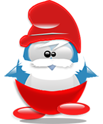
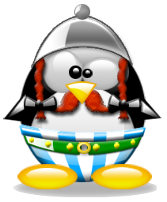

Role Models for the new generations
Pop Culture Relevant Icons
Count Dracula is the title character of Bram Stoker's 1897 gothic horror novel Dracula. He is considered to be both the prototypical and the archetypal vampire in subsequent works of fiction. He is also depicted in the novel to be the origin of werewolf legends. Some aspects of the character are believed to have been inspired by the 15th-century Wallachian Prince Vlad the Impaler.
The Statue of Liberty is a colossal neo-classical sculpture on Liberty Island in New York Harbor within New York City. The copper statue, a gift from the people of France to the people of the United States, was designed by French sculptor Frédéric Auguste Bartholdi and its metal framework was built by Gustave Eiffel.

Snow White is a fictional character and a main character from Walt Disney Productions' first animated feature film Snow White and the Seven Dwarfs (1937). The character of Snow White was derived from a fairy tale known from many countries in Europe, the best-known version being the one collected by the Brothers Grimm. Snow White is the first Disney Princess.
Dr. Henry Walton "Indiana" Jones, Jr. is the title character and protagonist of the Indiana Jones franchise. George Lucas created the character in homage to the action heroes of 1930s film serials. The character first appeared in the 1981 film Raiders of the Lost Ark, to be followed by Indiana Jones and the Temple of Doom in 1984, Indiana Jones and the Last Crusade in 1989, The Young Indiana Jones Chronicles from 1992 to 1996, and Indiana Jones and the Kingdom of the Crystal Skull in 2008.

Harry Potter is a fictional character and the titular protagonist in J. K. Rowling's series of eponymous novels. The majority of the books' plot covers seven years in the life of the orphan Harry, who, on his eleventh birthday, learns he is a wizard. Thus, he attends Hogwarts School of Witchcraft and Wizardry to practise magic under the guidance of the kindly headmaster Albus Dumbledore and other school professors along with his best friends Ron Weasley and Hermione Granger.
Comic and Literature Icons
Superman

Superman is a fictional superhero, who first appeared in American comic books published by DC Comics. The character was created by writer Jerry Siegel and artist Joe Shuster. Superman was born on the planet Krypton and was given the name Kal-El at birth. As a baby, his parents sent him to Earth in a small spaceship moments before Krypton was destroyed in a natural cataclysm. His ship landed in the American countryside. He was found and adopted by farmers Jonathan and Martha Kent, who named him Clark Kent. Clark developed various superhuman abilities, such as incredible strength and impervious skin.
Batman

Batman is a superhero who appears in American comic books published by DC Comics. Batman was created by artist Bob Kane and writer Bill Finger. Batman is the alias of Bruce Wayne, a wealthy American playboy, philanthropist, and owner of Wayne Enterprises based in Gotham City. Batman's origin story features him swearing vengeance against criminals after witnessing the murder of his parents Thomas and Martha; he trains himself physically and intellectually, crafts a bat-inspired persona, and monitors the Gotham streets at night.
Spiderman
Spider-Man is a fictional superhero created by writer-editor Stan Lee and writer-artist Steve Ditko. His origin story has him acquiring spider-related abilities after a bite from a radioactive spider; these include clinging to surfaces, superhuman strength and agility, and detecting danger with his "spider-sense." He then builds wrist-mounted "web-shooter" devices that shoot artificial spider-webbing. The Spider-Man series broke ground by featuring Peter Parker, a high school student from Queens behind Spider-Man's secret identity.
The Thing
The Thing (Ben Grimm) is a fictional superhero appearing in American comic books published by Marvel Comics. The character is a founding member of the Fantastic Four. The Thing was created by writer-editor Stan Lee and artist Jack Kirby. The character is known for his trademark rocky appearance, sense of humor, and famous battle cry, "It's clobberin' time!". The Thing's primary superhuman power is his great physical strength. Over the years, as a result of further mutation and rigorous training on machines designed by Reed Richards (Mr. Fantastic), his strength has increased dramatically.
Papa Smurf
Papa Smurf is one of the protagonists from the comic strip the Smurfs. Most Smurfs are said to be about 100 years old, but at the advanced age of 546, Papa is the oldest Smurf and the leader of all Smurfs. Despite his age, he is still quite energetic. Easily distinguishable from all the other Smurfs, Papa Smurf has a bushy white mustache and beard and is typically dressed in red pants and a matching red Phrygian cap, making him the only Smurf who does not wear white. He was introduced in Peyo's 1958 Johan and Peewit story "La Flûte à Six Trous", the first appearance of the Smurfs.
Obelix the Gaul
Obelix is a cartoon character in the French comic book series Asterix. He works as a menhir sculptor and deliveryman, and is Asterix's best friend. Obelix is noted for his fatness, the menhirs he carries around on his back and his superhuman strength. He fell into a cauldron of the Gauls' magic potion when he was a baby, causing him to be the only Gaul in Asterix's village who is in a permanent state of superhuman strength. Because of this already enormous strength, Obelix is not allowed to drink the magic potion ever again, a ban he regards as being tremendously unfair.
Winnie the Pooh
Winnie-the-Pooh, also called Pooh Bear and Pooh, is a fictional anthropomorphic teddy bear created by English author A. A. Milne and English illustrator E. H. Shepard. Pooh is naive and slow-witted, but he is also friendly, thoughtful and steadfast. Although he and his friends agree that he is "a bear of very little brain," Pooh is occasionally acknowledged to have a clever idea, usually driven by common sense. Pooh is very fond of food, particularly "hunny", but also condensed milk and other items. Pooh is very social. After Christopher Robin, his closest friend is Piglet.
Mickey Mouse
Mickey Mouse is a cartoon character created in 1928 at Walt Disney Animation Studios, who serves as the mascot of the Walt Disney Company. An anthropomorphic mouse who typically wears red shorts, large yellow shoes, and white gloves, Mickey is one of the world's most recognizable fictional characters. Mickey generally appears alongside his girlfriend Minnie Mouse, his pet dog Pluto or his friends Donald Duck and Goofy. Though originally characterized as a cheeky lovable rogue, Mickey was rebranded over time as a nice guy, usually seen as an honest and bodacious hero.